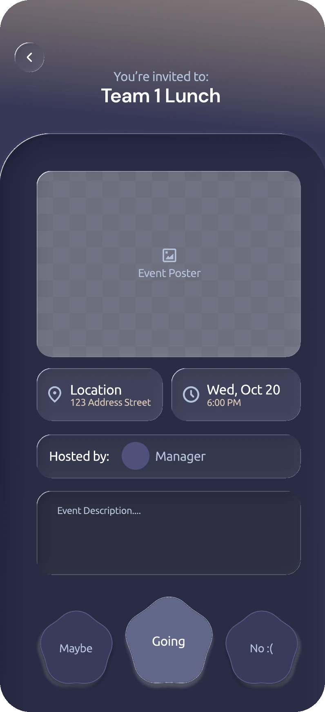

beforeafter
Going became the obvious button
testing
In testing, people got distracted by other buttons instead of tapping Going. They needed clear signs of what’s interactive and what to do next.
us
So we colorized the wireframe and gave Maybe, Going and No clear shapes, with Going the biggest. Now it’s the obvious tap.